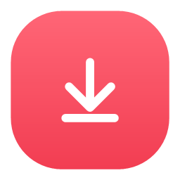
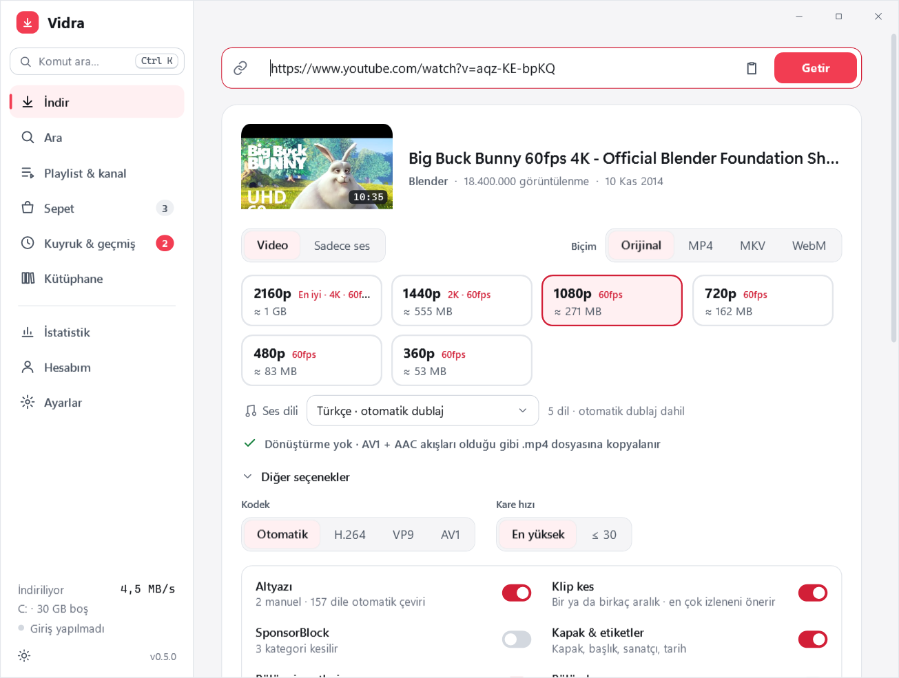
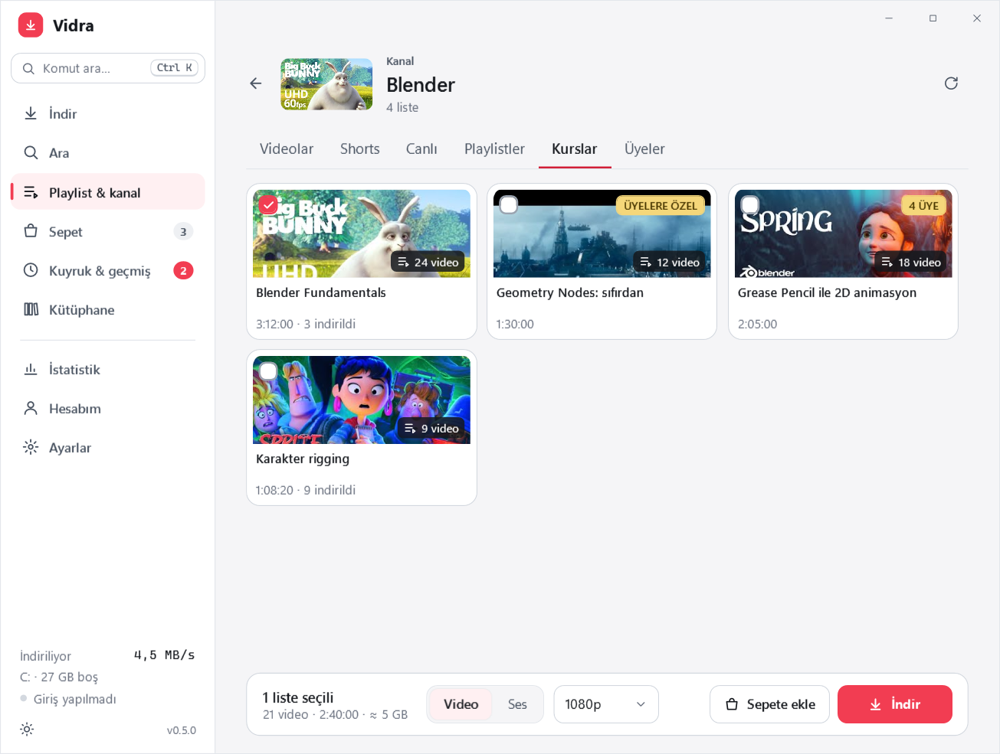
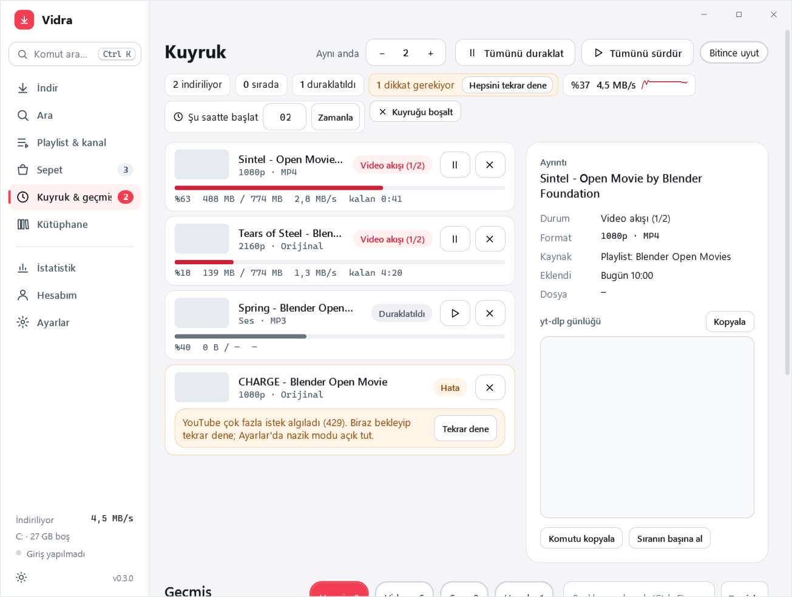
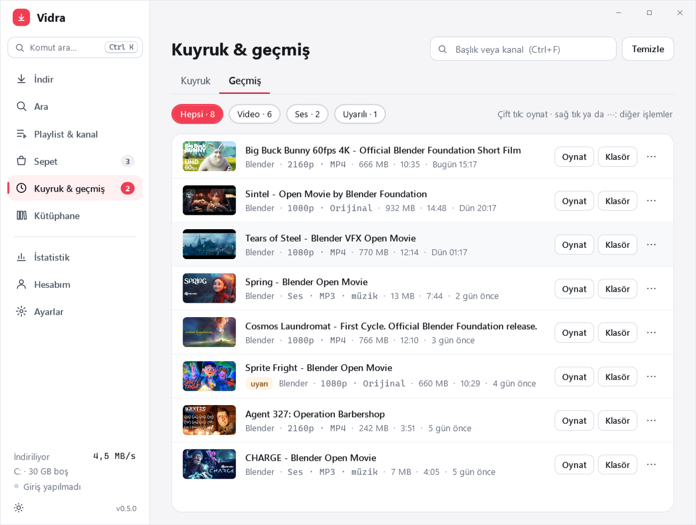
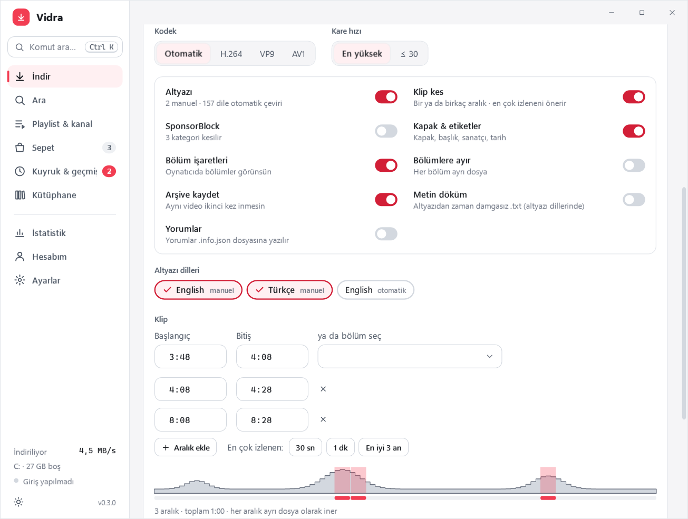
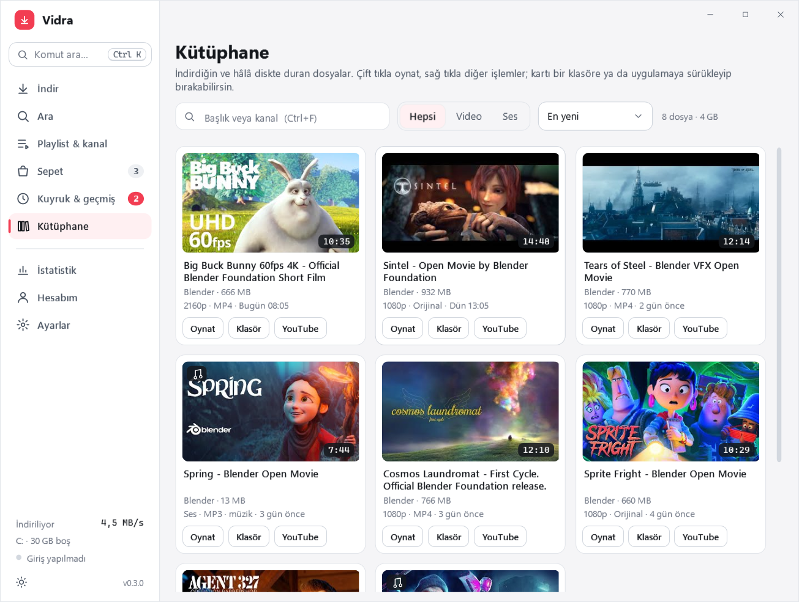

Vidra GitHubBağlantıyı yapıştır, kaliteyi seç, indir. Tek videodan koca kanallara, playlistlerden MP3 arşivine kadar; yt-dlp'nin gücü, temiz bir arayüzde.

4K ve HDR'ye kadar kalite, kodek ve ses dili (dublaj) seçimi, altyazı. Başlamamış yayını başlayınca indirir.
Videolar, Shorts, Canlı, Playlistler, Kurslar ve Üyeler sekmeleri. Liste kartlarında video sayısı görünür; seç, tek tıkla indir. İndirdiklerin atlanır.
Üye olduğun kanalların üyelere özel videoları listelenir; playlist kartları kaç videonun üyelere özel olduğunu gösterir.
MP3 / FLAC; kare kapak, ses seviyesi eşitleme, sanatçı-albüm-parça etiketleri.
Abonelikler, Daha sonra izle, Beğenilenler ve playlistlerin. Şifren hiçbir zaman sorulmaz.
Aynı anda birden çok indirme, duraklat/sürdür, zamanlanmış başlangıç, bitince uyut; geçmiş ve istatistikler.
YouTube'un izlenme grafiğinden en çok izlenen 30 sn, 1 dk ya da en iyi 3 an tek tıkla klip olur.
Ctrl+K ile sayfa, eylem ve geçmişte ara; bağlantı yapıştırırsan açar. Bağlantıyı pencereye sürükleyip bırakmak da yeter.




